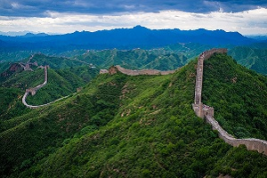
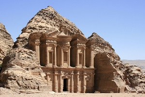
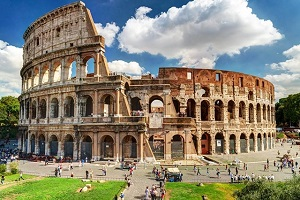
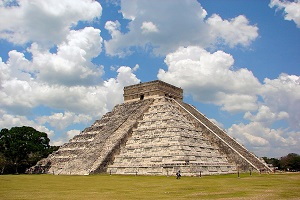
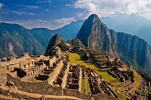
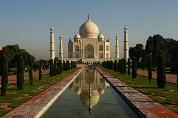
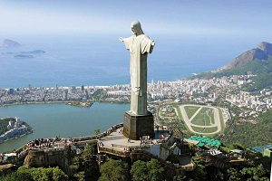

A 4,160-mile wall was built to protect China from invading Huns, Mongols, and other tribes, and
to unite fortifications into one defense system. Begun in the 7th century B.C.,
the barricade took hundreds of years to build, world’s longest man-made structure and is the only one visible from space.

Petra was discovered in 1812 after being lost by the 16th century for almost 300 years
Ancient capital city was built around 9 B.C. during the reign of
King Aretas IV and continued to grow during the Roman Empire.
It is now visible in its pink stone ruins and carved façade.

Giant 50,000 seat amphitheater in the center of Rome was built
in 72 AD and was opened six years later during the reign of Emperor Titus.
It has the enormous measures 188 meters and 156 meters larger radius of smaller radius.
and still influences the design of sports stadiums throughout the world.

Chichén Itzá a massive step pyramid, known as El Castillo or Temple of Kukulcan,
which thrived around 600 A.D. to the 1200s. Graphic stone carvings survive at structures like the ball court,
Temple of the Warriors and the Wall of the Skulls. Nightly sound-and-light shows illuminate the buildings.

“City in the clouds” was built 8,000 feet above sea level
in the 15th century by Incan emperor Pachacutec. Abandoned by the Incas,
the city remained unknown until, rediscovered in 1911.
its renowned for its sophisticated dry-stone walls that fuse huge blocks without use of mortar.

Built around 1631 by emperor, Shah Jahan, in honor of his dead wife,
this white marble structure combines Indian, Persian, and Islamic style of architecture.
on the southern bank of the river Yamuna in the Indian city of Agra. It also houses the tomb of Shah Jahan himself.

Standing 125 feet tall atop the Corcovado Mountain high above Rio,
this statue took five years to build. Constructed in
France by sculptor Paul Landowski between 1922 and 1931, it was shipped to Brazil in pieces,
and then carried up the mountain by train, where it was reassembled.

It is the oldest and largest of the pyramids in the Giza pyramid complex bordering present-day Giza in Greater Cairo,
filling 13 acres at its base, 481 feet tall.
Egyptologists conclude that the pyramid was built as a tomb for the Fourth
Dynasty Egyptian pharaoh Khufu and estimate that it was built in the 26th century BC.